SAMUEL DIGITAL
SAMUEL DIGITAL
6° grado · Scratch
El penal ⚽
Programamos nuestro propio juego de penales: el arquero adivina al azar para qué lado tirarse, como en un partido de verdad, y hay tres finales.
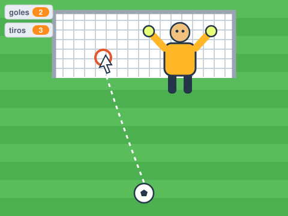
Arrancá un proyecto nuevo
Entrá a Scratch y empezá un proyecto nuevo. Al gato no lo vamos a usar: hacé clic derecho sobre el gato → borrar.
Hoy el juego tiene tres objetos: la Pelota, el Arquero y el Arco.
Agregá la Pelota y el Arquero
Tocá Elegir un objeto (el gatito azul de abajo a la derecha) y buscá Soccer Ball. Cambiale el nombre a Pelota.
Hacé lo mismo con Goalie (un arquero) y llamalo Arquero.
💡 Los nombres tienen que ser exactamente Pelota y Arquero, con mayúscula, porque el código los usa. Si el arquero queda muy grande, achicalo en Tamaño (por ejemplo, 70).
Dibujá el Arco
En Elegir un objeto tocá el pincel (Pintar). Con el rectángulo dibujá un arco ancho, relleno de blanco. Si querés, hacele la red con líneas grises. Llamá al objeto Arco.
💡 El arco tiene que estar relleno, no solo el borde: así la pelota “lo toca” cuando entra al arco.
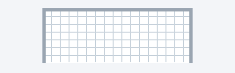
Prepará los fondos NUEVO
Tocá el Escenario (abajo a la derecha) y entrá a Fondos. Necesitás un fondo para jugar, que se llame cancha (podés elegir Soccer y cambiarle el nombre, o pintar uno verde), y los fondos del final: campeón, ganaste y perdiste. Escribí el cartel con la herramienta de texto.
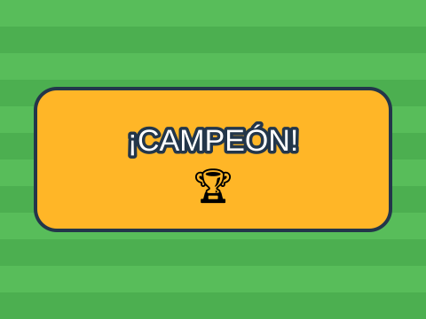
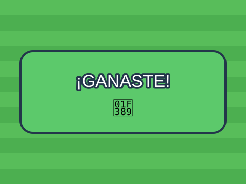
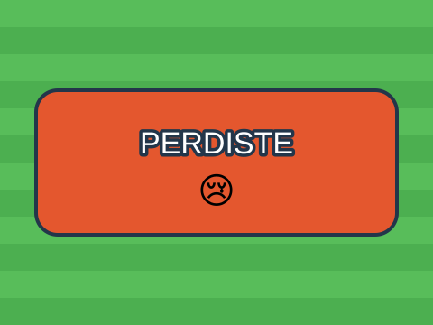
Creá las variables
Andá a Variables (naranja) y tocá Crear una variable. Creá: goles, tiros y lado. Elegí “Para todos los objetos”.
lado va a guardar para qué lado se tira el arquero: 1 es izquierda, 2 es el medio y 3 es derecha.
💡 Dejá tildadas goles y tiros para que se vean en la pantalla mientras jugás.
Ubicá el Arco
En el objeto Arco: al empezar, se muestra y se ubica arriba, en el centro.
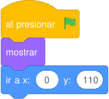
El Arquero se tira al azar NUEVO
Este arquero no camina: se queda en el medio hasta que lo patean. Cuando recibe el mensaje patear, elige un número al azar entre 1 y 3 y lo guarda en lado.
Si sale 1 se tira a la izquierda, si sale 3 se tira a la derecha, y si sale 2 no hace nada: se queda en el medio. Después de 1 segundo vuelve a su lugar.
💡 Para crear el mensaje: en el bloque “al recibir”, tocá el triangulito y elegí “Nuevo mensaje”.
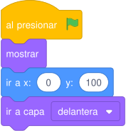
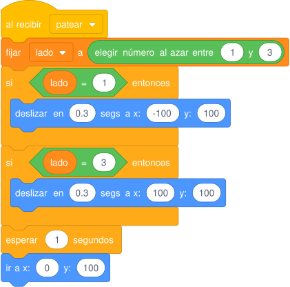
La Pelota patea NUEVO
Cuando tocás la barra espaciadora, la pelota primero avisa “patear” (así el arquero se tira) y después se desliza hasta donde está el mouse. Cuando llega, se fija qué pasó:
- Si toca al Arquero: ¡atajó!
- Si no, si toca el Arco: ¡gol! Suma 1 a goles.
- Si no toca ninguno: se fue afuera.
Pase lo que pase, suma 1 a tiros y la pelota vuelve al punto del penal.
💡 Apuntá con el mouse adentro del arco y tocá la barra espaciadora una sola vez. Esperá que la pelota vuelva antes de patear de nuevo.
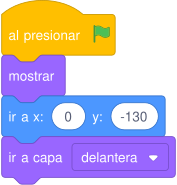
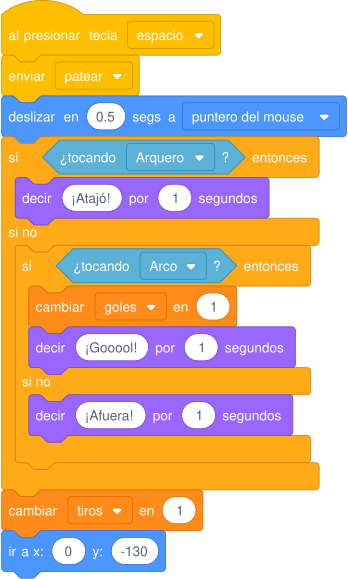
El Escenario es el árbitro
El Escenario pone la cancha y espera hasta que los tiros sean 5. Después elige entre tres finales: si hiciste los 5 goles, sos campeón; si no, si hiciste más de 2, ganaste; y si no, perdiste.
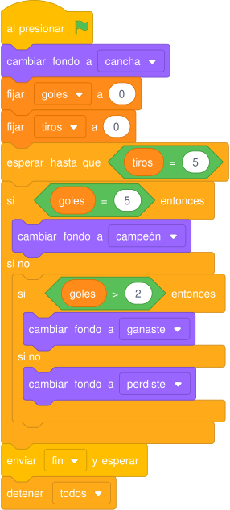
Cuando termina, todos se esconden
En la Pelota, el Arquero y el Arco agregá este código: cuando reciben el mensaje fin, se esconden. Así se ve bien el cartel del final.
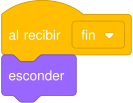
¡A jugar!
Tocá la bandera verde, apuntá con el mouse y pateá con la barra espaciadora. ¿Cuántos goles le hacés al arquero en 5 penales?
⭐ Desafíos extra
¿Terminaste? Probá alguno de estos:
- Agregá un cronómetro: tenés 3 segundos para patear o el tiro cuenta como errado.
- Que el arquero también pueda tirarse arriba o abajo (más números al azar).
- Muerte súbita: si quedan empatados, ¡a seguir pateando!